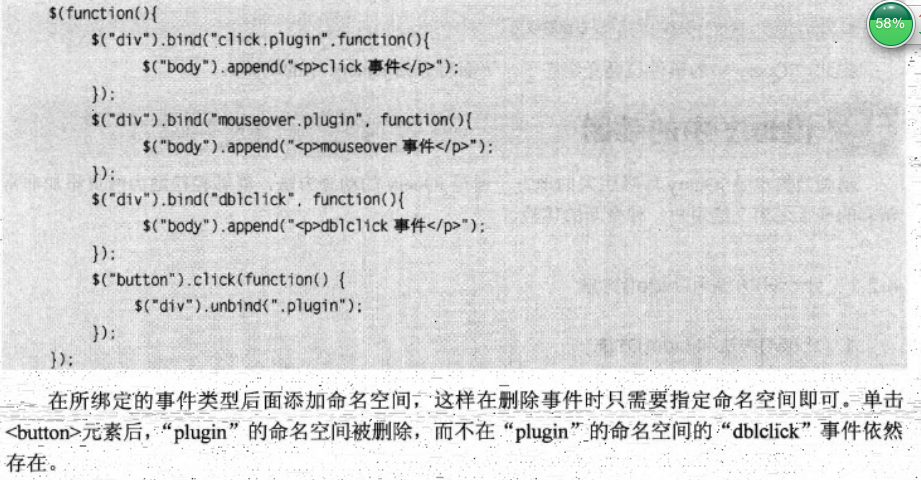

window.onload=function(){}/$(window).load(function(){})需要等待DOM结构渲染完毕且关联文件加在完毕后执行，比如img png,jpeg！$(function)/$(document).ready(),DOM结构加载完毕即可 运作！
忽如一夜春风过来，千树万树梨花开。
问君能有几多愁，恰似一江春水向东流。
忽如一夜春风过来，千树万树梨花开。
问君能有几多愁，恰似一江春水向东流。
sslala
aaa .trigger('click!');匹配不包含在命名空间中的click;trigger('click'),所有的click,包含命名空间内的!
hide(),show();fadeIn;fadeOut();slideUp();slideDown()
不同点：(1)show,hide是节点消失出现(2)slidUp,slideDown是改变高度实现(3)fadeIn改变透明度,因而宽高没变化
if(!$('.nn').is("animated")){}//如果对象不处于动画状态...;
stop()动画预防重叠冲突机制！stop()停止正在进行的！stop(true),将接下来尚未执行的动画列队清空!stop(true,true),当前动画执行到末尾，且清空接下来尚未执行的动画列队~!
.delay(),动画延时！.delay(1000),失控暂停!
ps晚上写个点击切换